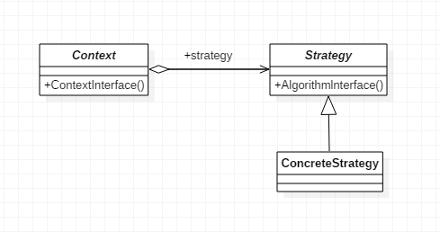

策略模式作为一种软件设计模式，指对象有某个行为，但是在不同的场景中，该行为有不同的实现算法。比如每个人都要“交个人所得税”，但是“在美国交个人所得税”和“在中国交个人所得税”就有不同的算税方法。
策略模式（Strategy），定义了一组算法，将每个算法都封装起来，并且使它们之间可以互换。
UML结构图如下：

其中，Context是上下文，维护了一个对Strategy对象的引用；Strategy是策略类，用于定义所有支持算法的公共接口；ConcreteStrategy是具体策略类，封装了具体的算法或行为，继承于Strategy。
Context上下文角色，也叫Context封装角色，起承上启下的作用，屏蔽高层模块对策略、算法的直接访问，封装可能存在的变化。
public class Context {
Strategy strategy;
public Context(Strategy strategy) {
this.strategy = strategy;
}
//上下文接口
public void contextInterface() {
strategy.algorithmInterface();
}
}抽象策略角色，是对策略、算法家族的抽象，通常为接口，定义每个策略或算法必须具有的方法和属性。algorithm是“运算法则”的意思。
public abstract class Strategy {
//算法方法
public abstract void algorithmInterface();
}用于实现抽象策略中的操作，即实现具体的算法，下方用print代替。测试类共3个ConcreteStrategy，其它两个类与ConcreteStrategyA同理，就不再赘述了。
public class ConcreteStrategyA extends Strategy {
@Override
public void algorithmInterface() {
System.out.println("算法A实现");
}
}下面依次更换策略，测试一下策略模式。
public class Client {
public static void main(String[] args) {
Context context;
context = new Context(new ConcreteStrategyA());
context.contextInterface();
context = new Context(new ConcreteStrategyB());
context.contextInterface();
context = new Context(new ConcreteStrategyC());
context.contextInterface();
}
}
/**测试结果
算法A实现
算法B实现
算法C实现
*/应用场景
优点：
缺点：
我们来模拟一个下班回家的场景，需要自己选择不同的交通工具来回家
首先声明一个TravelContext对象，通过构造方法，传入具体的交通工具。
public class TravelContext {
private Vehicle vehicle;
public TravelContext(Vehicle vehicle){
this.vehicle = vehicle;
}
public void goHome(){
if (vehicle!=null){
vehicle.travel();
}
}
}public interface Vehicle {
void travel();
}public class Bus implements Vehicle {
public void travel() {
System.out.println("乘坐巴士");
}
}
public class Car implements Vehicle {
public void travel() {
System.out.println("乘坐小汽车");
}
}
public class Taxi implements Vehicle {
public void travel() {
System.out.println("乘坐出租车");
}
}下面写一个简单的程序测试一下上方编写的代码。
public class Client {
public static void main(String[] args) {
TravelContext travelContext = null;
System.out.println("请选择回家乘坐的交通工具:1.小汽车 2.出租车 3.巴士");
Scanner scanner = new Scanner(System.in);
int input = scanner.nextInt();
switch (input){
case 1:
travelContext = new TravelContext(new Car());
travelContext.goHome();
break;
case 2:
travelContext = new TravelContext(new Taxi());
travelContext.goHome();
break;
case 3:
travelContext = new TravelContext(new Bus());
travelContext.goHome();
break;
default:
System.out.println("请输入1/2/3");
break;
}
}
}
/**测试结果
请选择回家乘坐的交通工具:1.小汽车 2.出租车 3.巴士
3
乘坐巴士
*/